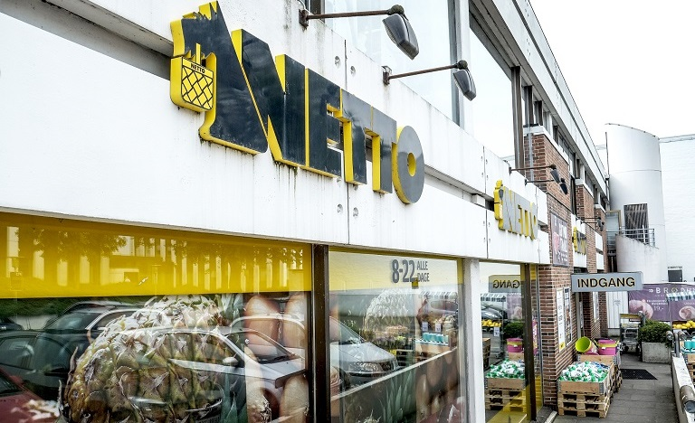
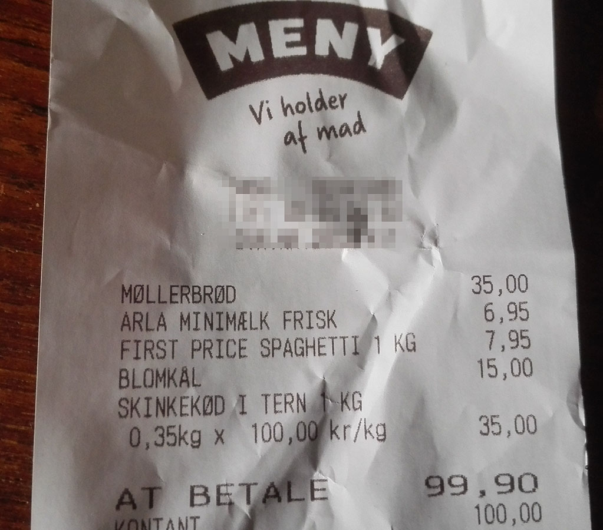

Source: News Oresund, flickr CC
Everyone warns you that Denmark, and especially Copenhagen is extremely expensive, including the food. If you know where to shop, the food is only a bit (~20%) more expensive than in the Netherlands or in Germany.
The best budget supermarket in my opinion is Rema 1000. The have a good selection of items, friendly prices if you pick the budget versions of items, and the shops aren't furnished too bad. Other budget choices are:
The Danish brand budget supermarkets in general are not as no-frills as Aldi and Lidl. The articles are usually displayed on shelves and not in boxes and they stack several brands of one product. They do sell some non-food discount items however and also don't have an in-house bakery, but do stack some fresh bread.
The higher segment stores have a much better assortment, stacking a large choice of fresh meat, fish, dairy and bakery. Føtex also has a large non-food section (the name even stands for 'Fødevarer (daily groceries) and Textil (textiles)'). If you need a break from the rugbrød and meat diet it's nice to shop there, but prices are pretty bad (70 DKK for a little smoked salmon, 28 DKK for a box of eggs). Meny is also a good supermarket, lot's of freshly prepared food, and lot's of choice. They had an aisle full of tea for example, and the svinekød (pork) section alone is as large as a small butcher's shop.
| Item | DKK | EUR* |
|---|---|---|
| 1 kg. onions | 6.00 | 0.78 |
| Cauliflower | 15 | 2.01 |
| Brocolli (500 gr.) | 10 | 1.30 |
| 1kg carrots | 11 | 1.47 |
| 1 kg. salt | 2.50 | 0.33 |
| 1L sunflower oil | 10.50 | 1.67 |
| 500 gr. minced beef | 20 | 2.6 |
| 350 gr. pork | 35 | 4.79 |
| Pære-banan yoghurt (1L) | 12 | 1.61 |
| 15 battery eggs | 21.50 | 2.88 |
| 1L minimælk (low-fat milk) | 6.95 | 0.93 |
| Loaf of whole-wheat bread | 20 to 35 | 2.68 to 4.79 |
Yes, that's DKK 35 for a loaf of bread.